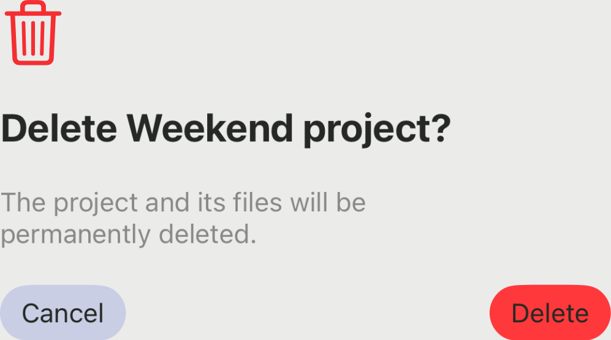
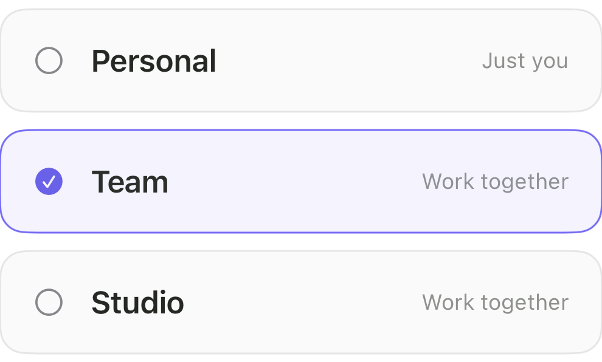
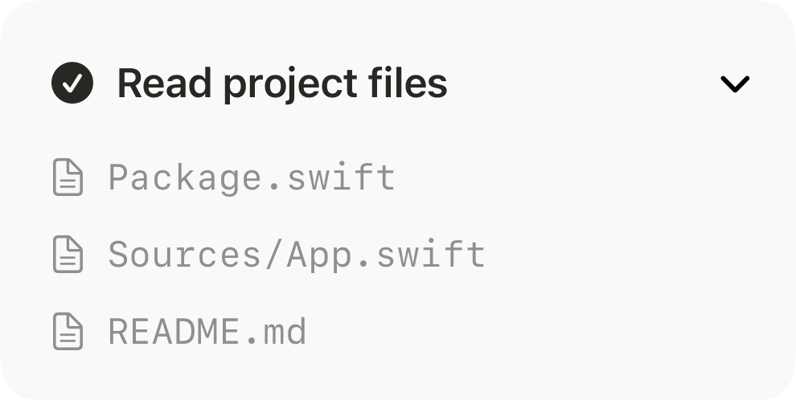

SWIFTUI COMPONENT RECIPES
Build a component Import a behavior, bind your state, and write the SwiftUI view. Here are three complete examples and what they look like running on iOS.
Confirmation sheet Plan picker Tool activity Disclosure + behaviorSheet
A confirmation sheet Disclosure owns open and dismiss state. SwiftUI presents the sheet. Your view supplies the title, actions and layout.
import SwiftUI
import UIBehaviorCore
import UIBehaviorSwiftUI
struct DeleteProjectButton: View {
let project: String
let onDelete: () -> Void
@State private var confirmation = Disclosure()
var body: some View {
Button("Delete project", role: .destructive) { confirmation.open() }
.buttonStyle(.bordered)
.behaviorSheet ($confirmation) {
VStack(alignment: .leading, spacing: 20) {
Image(systemName: "trash").font(.largeTitle).foregroundStyle(.red)
Text("Delete \(project)?").font(.title2.bold())
Text("The project and its files will be permanently deleted.")
.foregroundStyle(.secondary)
HStack {
Button("Cancel") { confirmation.dismiss(.action) }
.buttonStyle(.bordered)
Spacer()
Button("Delete", role: .destructive) {
confirmation.dismiss(.action)
onDelete()
}.buttonStyle(.borderedProminent).tint(.red)
}
}
.padding(28)
.presentationDetents([.height(300)])
}
}
}
Use it in your app
DeleteProjectButton(project: "Weekend project") {
deleteProject()
}ACTUAL iOS SIMULATOR

Built from this Swift file with the package’s native adapters.
Selection + BehaviorChoiceList
A plan picker The adapter supplies native buttons, selection, keyboard focus and typeahead. The row closure supplies the cards you see.
import SwiftUI
import UIBehaviorCore
import UIBehaviorSwiftUI
struct PlanPicker: View {
@Binding var selection: Selection<String>
var body: some View {
BehaviorChoiceList (
["Personal", "Team", "Studio"], selection: $selection,
label: { "\($0), \($0 == "Personal" ? "Just you" : "Work together")" }
) { plan, selected in
HStack(spacing: 14) {
Image(systemName: selected ? "checkmark.circle.fill" : "circle")
.foregroundStyle(selected ? Color.indigo : Color.secondary)
Text(plan).font(.headline)
Spacer()
Text(plan == "Personal" ? "Just you" : "Work together")
.font(.caption).foregroundStyle(.secondary)
}
.padding(18).frame(minHeight: 56)
.background(
selected ? Color.indigo.opacity(0.08) : Color.secondary.opacity(0.04),
in: RoundedRectangle(cornerRadius: 14))
.overlay(RoundedRectangle(cornerRadius: 14)
.stroke(selected ? Color.indigo : Color.secondary.opacity(0.2)))
.padding(.vertical, 5)
}
}
}
Use it in your app
import SwiftUI
import UIBehaviorCore
struct SettingsView: View {
@State private var plan = Selection<String>(selected: ["Personal"])
var body: some View {
PlanPicker(selection: $plan)
}
}ACTUAL iOS SIMULATOR

Built from this Swift file with the package’s native adapters.
Disclosure + BehaviorDisclosure
Expandable tool activity Disclosure stores whether the details are open. The adapter binds it to a native DisclosureGroup. You supply both views.
import SwiftUI
import UIBehaviorCore
import UIBehaviorSwiftUI
struct ToolActivity: View {
@State private var details = Disclosure(isOpen: true)
var body: some View {
BehaviorDisclosure ($details) {
Label("Read project files", systemImage: "checkmark.circle.fill")
.font(.headline)
} content: {
VStack(alignment: .leading, spacing: 14) {
ForEach(["Package.swift", "Sources/App.swift", "README.md"], id: \.self) { file in
Label(file, systemImage: "doc.text")
.font(.subheadline.monospaced()).foregroundStyle(.secondary)
}
}.frame(maxWidth: .infinity, alignment: .leading).padding(.top, 16)
}
.tint(.indigo).padding(20)
.background(Color.secondary.opacity(0.05), in: RoundedRectangle(cornerRadius: 16))
}
}
Use it in your app
ToolActivity()ACTUAL iOS SIMULATOR

Built from this Swift file with the package’s native adapters.